▲ 석파정 정자 일대의 단풍. 촬영 연도는 확인되지 않은 상시 풍경 사진이다. 사진=한국관광공사
"석파정만 따로 입장할 수 있을까?" 인왕산 자락 부암동의 석파정(흥선대원군 별서)은 지금 서울미술관이 관리·운영하고 있어, 공식 관람 안내 기준으로는 석파정 개별 입장이 불가능하고 통합 입장권(성인 20,000원) 한 장으로 석파정과 미술관을 함께 본다. 이 글은 2026년 10월 7일에 서울미술관 공식 누리집(관람안내·연락처·공지·전시), 국가유산포털, 한국관광공사 TourAPI를 직접 열어 확인한 운영 시간·요금·주차 조건을 정리했다. 예전 기사와 블로그에는 11,000원, 15,000원 같은 옛 요금이 아직 남아 있으니 그대로 믿지 않는 편이 좋다. 석파정의 역사는 서울시 미디어허브·국가유산포털·TourAPI에 있는 내용만 썼고, 서울 단위 단풍 절정 날짜와 예약 방식처럼 공식 자료에서 찾지 못한 것은 해당 부분에 "확인하지 못했다"고 적었다.
💡 먼저 결론
수~일요일 10:00~18:00(입장 마감 17:00), 월·화요일 휴관, 통합 입장권 성인 20,000원. 자차는 전시를 관람해야 무료주차가 적용되고(평일 2시간·주말 공휴일 1시간 30분), 공식 안내가 "주차장이 매우 협소하다"며 대중교통을 권한다. 부암동 일대 골목 주차난은 기존 기사에서도 다뤘다.
1. 한눈에 보기 — 석파정 서울미술관
| 항목 | 내용 | 확인 근거 |
|---|---|---|
| 주소 | 서울 종로구 창의문로11길 4-1(부암동) | 서울미술관 누리집, 한국관광공사 |
| 관람일·휴관일 | 수요일~일요일 관람, 매주 월요일·화요일 휴관 | 서울미술관 관람안내, 한국관광공사 TourAPI(석파정 항목) |
| 운영 시간 | 미술관 10:00~18:00, 입장 마감 17:00. 석파정은 관람안내에 10:00~18:00(입장 마감 17:00)로 적혀 있다 | 누리집 첫 화면에는 "미술관 10:00-18:00 / 석파정 10:00-17:00"로 달라 불일치가 남아 있다. 한국관광공사 TourAPI 석파정 항목과 서울미술관 항목(2026년 8월 5일 수정)은 모두 관람안내와 같은 "10:00~18:00(입장 마감 17:00)"이라 17:00이 입장 마감이라는 쪽이 우세하지만, 첫 화면 표기가 정원의 실제 종료 시각일 수도 있어 확정하지 못했다. 2025년 4월 갱신된 외부 안내 한 곳은 석파정 입장 마감을 16:00으로 적었다(단일 출처). 안전하게는 16:00 전후까지 입장하는 편이 좋다 |
| 요금 | 통합 입장권 성인 20,000원, 학생(만 13~18세) 15,000원, 어린이(만 12세 이하)·우대 13,000원, 36개월 미만 무료 | 서울미술관 관람안내, TourAPI와 일치. 석파정 개별 입장 불가 |
| 문의 | 02-395-0100(TourAPI 서울미술관 항목에는 0507-1446-0100도 등록) | TourAPI(석파정·서울미술관 항목), 서울시 미디어허브 소개글, 서울미술관 공지 목록 |
| 문화재 지위 | 서울특별시 유형문화유산(옛 명칭 유형문화재) 제26호, 1974년 1월 15일 지정 | 국가유산포털(지정일·소재지), 서울시 미디어허브, 서울미술관 누리집 첫 화면(제26호) |
| 휴관·공사 공지 | 10월 공지는 찾지 못했다. 누리집 공지 목록의 가장 최근 운영 안내는 "2026년 6월 운영 안내"(2026.5.28 게시) | 2026년 10월 7일 확인 |
한국관광공사 TourAPI에는 석파정이 관광지로 두 건(대원군별장, 석파정), 서울미술관이 문화시설로 한 건 등록돼 있다. 세 건 모두 같은 주소를 쓴다. 서울미술관 항목에는 "통합 입장권으로 미술관 전시와 석파정을 모두 관람할 수 있으며 석파정 앞마당에서 바라보는 부암동 일대 전경도 아름답다"고 적혀 있다.
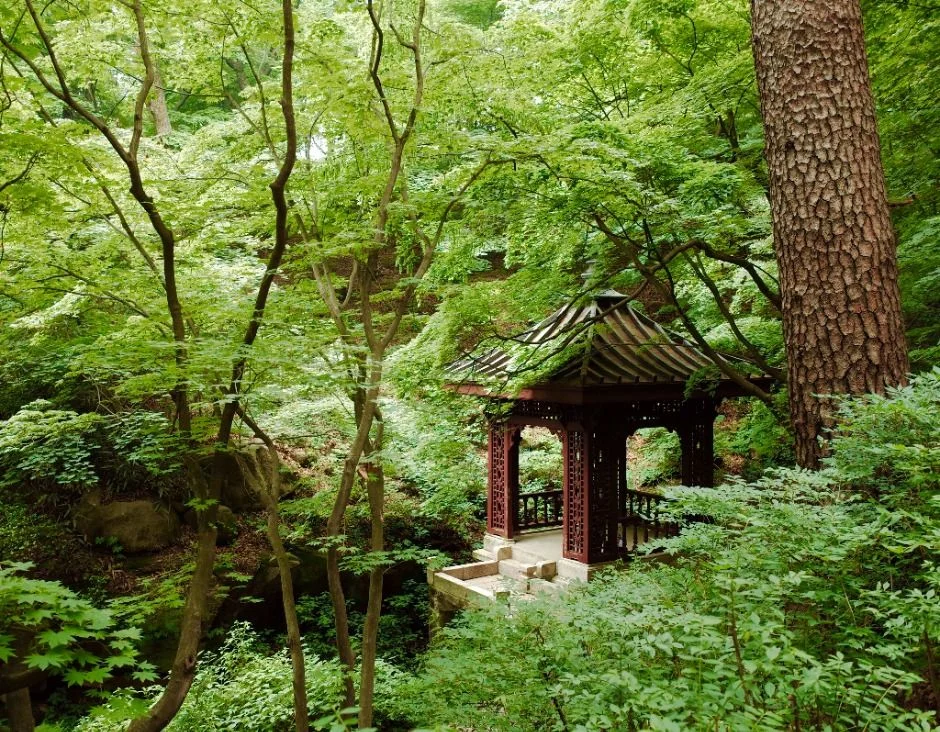
▲ 소나무 곁의 작은 정자. 같은 장소의 단풍철 사진은 아래 5번 섹션에 있다. 상시 풍경 사진이며 촬영 시점은 확인되지 않았다. 사진=한국관광공사
2. 입장권·예약·휴관 — 확인된 것과 못 찾은 것
서울미술관 공식 관람안내는 "본 입장권으로 석파정 및 서울미술관 전관 관람 가능, 석파정 개별 입장 불가"라고 명시한다. 석파정만 보고 싶어도 통합 입장권을 사야 하고, 36개월 미만은 증명 자료를 지참하면 무료다. 우대 대상은 만 65세 이상 본인, 국가유공자·유가족, 군인 본인, 장애 복지카드 소지자이며 신분증과 증명 자료가 필요하다. 30인 이상 자유관람은 10% 할인이 안내돼 있다. 반면 온라인 사전 예매나 시간대 예약이 필수인지는 관람안내에 나오지 않아 확인하지 못했다. 당일 현장 판매 여부, 네이버 예매 같은 외부 예약 채널도 공식 자료에서 찾지 못했다. 2025년 4월 갱신된 외부 안내 한 곳은 "당일 현장 접수, 예약 불가"라고 적었으나 단일 출처이고 현재 적용 여부는 확인하지 못했다. 방문 전 전화(02-395-0100)로 확인하는 편이 안전하다. 서울미술관 관람안내 바로가기
| 항목 | 내용 |
|---|---|
| 통합 입장권 | 성인 20,000원 / 학생 15,000원 / 어린이 13,000원 / 우대 13,000원 / 36개월 미만 무료 |
| 반입 금지 | 미술관과 석파정 내부에는 물을 포함한 모든 음식물 반입 불가 |
| 반려동물 | 서울미술관·석파정·주차장 전관 출입 금지(안내견 제외) |
| 금지 물품·행위 | 바퀴 달린 운동화, 킥보드, 전동 스쿠터, 자전거, 드론 사용 금지. 모든 공간 금연 |
| 촬영 | 전시장 내 촬영 가능하나 플래시 금지. 촬영물의 상업적 사용 적발 시 법적 처벌 가능 |
| 보관 | 배낭·등산장비·우산 등은 안내데스크 옆 물품보관소에 맡기도록 안내 |
| 우천·설천 | 관람객 안전상 야외공원(석파정) 관람이 제한될 수 있고, 당일 미술관에 문의하도록 안내 |
| 관람 외 활동 | 관람을 제외한 활동(촬영·행사 등)은 관람일로부터 48시간 전까지 사전 접수(주말·월요일 문의 불가) |
| 수유·기저귀 교환 | 미술관 인포데스크에 문의 |
| 입장 제한 | 주취자 입장 금지, 지정된 관람로를 따라 관람, 관람에 방해되거나 위험 요인이 있으면 즉시 퇴관 조치 |
| 유모차 | TourAPI 서울미술관 항목에는 유모차 대여 "없음"으로 표기 |
ℹ️ 비 오는 날은 석파정을 못 볼 수도 있다
공식 관람안내는 우천·설천 시 석파정 야외 관람이 제한될 수 있다고 밝히고 있다. 통합 입장권을 사고도 정원을 못 보는 상황을 피하려면 당일 오전에 미술관에 석파정 개방 여부를 물어보자.
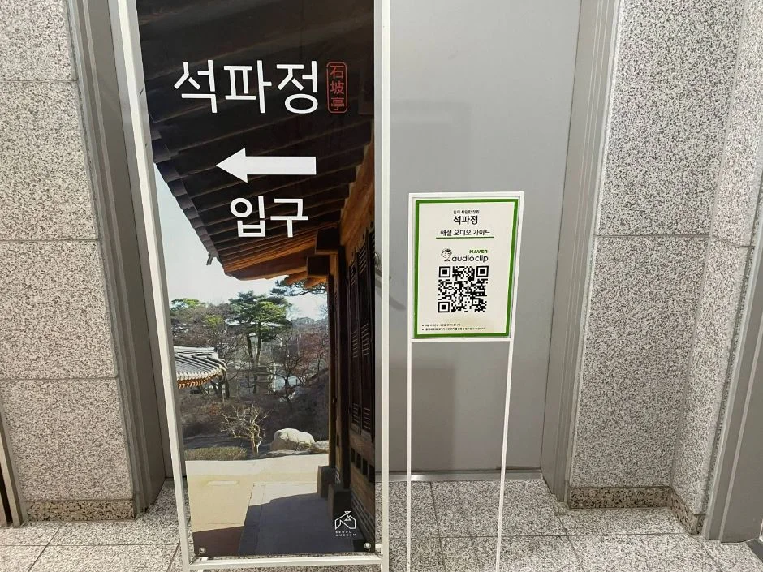
▲ 석파정 입구 안내판. 한국관광공사 무장애 정보 사진으로 올라온 현장 사진이다. 사진=한국관광공사
3. 자차는 이렇게 — 주차 조건이 핵심이다
서울미술관 공식 안내의 주차 조건은 구체적이다. 전시를 관람한 사람에 한해 무료 주차가 적용되고, 전시를 보지 않는 일반 주차는 안 된다. 무료 시간은 평일 2시간, 주말 1시간 30분이며 공휴일은 주말로 친다. 무료 시간이 지나면 10분당 1,000원이 붙고, 할인 적용 시간 이후 4시간을 추가로 쓰면 40,000원이다. 주차장 종료 시각은 18:10이고 그 이후에는 출차할 수 없다고 안내돼 있다. 연락처 페이지는 "주차장이 매우 협소하다. 가급적 대중교통을 이용해 달라"고 따로 당부한다.
| 구분 | 내용 | 근거 |
|---|---|---|
| 무료주차(평일) | 전시 관람자 2시간 | 서울미술관 관람안내 |
| 무료주차(주말·공휴일) | 전시 관람자 1시간 30분 | 서울미술관 관람안내 |
| 초과 요금 | 10분당 1,000원, 할인 시간 이후 4시간 추가 이용 시 40,000원 | 서울미술관 관람안내 |
| 주차장 종료 | 18:10, 이후 출차 불가. 전시 미관람 일반주차 불가 | 서울미술관 관람안내 |
| 주차 대수·혼잡도 | 대수는 확인하지 못했다. "매우 협소"라는 공식 안내만 확인 | 서울미술관 연락처 안내 |
| 자차 경로 | 경복궁역에서 세검정 삼거리(상명대학교) 방향, 자하문터널 입구 좌측 | 서울미술관 연락처 안내 |
| 지하철+버스 | 3호선 경복궁역 3번 출구에서 1020·1711·7016·7018·7022·7212번 버스, 자하문터널입구 하차. 5호선 광화문역 2·3번 출구에서는 1020·1711·7016·7018번 | 서울미술관 연락처 안내 |
| 도착 시각 | 평일 무료 마감 | 주말·공휴일 무료 마감 | 비고 |
|---|---|---|---|
| 10:00(개관 직후) | 12:00 | 11:30 | 전시 관람 인증이 전제 |
| 14:00 | 16:00 | 15:30 | 초과 시 10분당 1,000원 |
| 16:00 | 18:00 | 17:30 | 주차장 종료 18:10 전에 출차 |
| 17:00(입장 마감) | 19:00(종료 18:10이 먼저) | 18:30(종료 18:10이 먼저) | 입장 후 출차 마감까지 70분 |
위 표는 공식 조건(평일 2시간·주말 1시간 30분, 종료 18:10)에 도착 시각을 더한 단순 계산이다. 마감 직전에 입장하면 무료 시간이 남아도 18:10 출차 제한에 먼저 걸린다. 예를 들어 평일 10분 초과는 1,000원, 30분 초과는 3,000원, 1시간 초과는 6,000원이다(10분당 1,000원을 그대로 곱한 계산이며, 10분 미만 단수 처리 방식은 확인하지 못했다).
무료 시간을 넘기면 요금이 오르는 구조라 미술관 전시와 석파정 산책을 합쳐 평일 2시간, 주말 1시간 30분 안에 끝낼 수 있는지가 관건이다. 전시 세 편과 정원을 모두 보려면 시간이 빠듯할 수 있다는 점은 짐작이며, 실제 소요 시간은 확인하지 못했다. 주말 오후 대기 줄이나 만차 시 대안은 공식 자료에 없다. 부암동 골목의 거주자 우선 주차와 공영주차장 사정은 부암동 백사실계곡·성북동 길상사 기사에서 따로 정리했다.
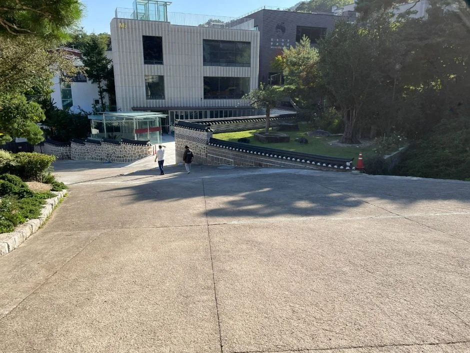
▲ 석파정 방향 진입 경사로. 한국관광공사 무장애 정보에 "내부 통로, 완만한 정도"로 올라온 사진이다. 사진=한국관광공사
4. 석파정은 어떤 곳인가 — 공식 자료에 있는 것만
한국관광공사 TourAPI는 석파정을 "조선 후기에 건립된 흥선대원군의 별서로 서울시 유형문화유산으로 지정돼 있으며, 인왕산 바위 자락으로 둘러싸인 곳"이라고 소개한다. 흥선대원군이 '석파정'이라 이름 지었고 삼계동 정자라고도 불렸으며, 본채 7채의 살림채와 육모정, 유수성중관풍루 등으로 구성됐으나 오늘날에는 안채, 사랑채, 별채와 정자 4개 동만 남았다고 한다. 서울시 미디어허브 소개글은 원래 김흥근(1837~1858년 소유)의 별장이었고 흥선대원군이 1863년경 인수해 별서로 썼으며, 1974년 서울시 유형문화재 제26호로 지정되고 2012년 서울미술관 개관과 함께 일반에 열렸다고 정리한다. 서울미술관 누리집에는 운영 법인 석파문화원이 1997년 흥선대원군 별서를 인수했다고 적혀 있다.
| 내용 | 출처 | 비고 |
|---|---|---|
| 조선 후기 흥선대원군의 별서, 서울시 유형문화유산 | 한국관광공사 TourAPI | 대원군이 "석파(石坡)"를 따 이름을 붙였다고 소개 |
| 김흥근 소유(1837~1858년) 후 대원군 인수(1863년경) | 서울시 미디어허브 | 연도는 "경(무렵)"으로 표기 |
| 1974년 1월 15일 서울특별시 유형문화재(현 유형문화유산) 제26호 지정 | 국가유산포털(지정일), 서울시 미디어허브(번호·연도) | TourAPI는 지정 연도를 적지 않았다. 두 출처 일치 |
| 건물 4동·각자 2개소·정자 초석 1개소·대지 1,108.4㎡ | 국가유산포털 | 지정 구성 표기. 석파정 경내 사진의 바위·정자는 이 구성과 관련될 수 있으나 사진과의 일치는 확인하지 못했다 |
| 본채 7채 중 현재 안채·사랑채·별채·정자 4개 동 현존 | 한국관광공사 TourAPI, 서울시 미디어허브, 국가유산포털(건물 4동) | 세 출처 일치 |
| 현재 건물·정원 운영: 석파문화원 서울미술관 | 서울미술관 누리집 | 1997년 별서 인수, 2012년 미술관 개관 |
| 천세송: 약 650년 된 소나무, 서울시 보호수 제60호 | 서울시 미디어허브 | 수령은 추정치로 소개 |
| 유수성중관풍루: 물소리 속에서 단풍을 본다는 정자 | 한국관광공사 TourAPI(건물명), 서울시 미디어허브(의미·건축 설명) | 화강암 바닥과 청나라풍 지붕 장식이 특징이라고 소개 |
국가유산포털의 지정 정보는 지정일 1974년 1월 15일, 소재지 서울 종로구 부암동 산16-1·201, 관리 석파문화원이며, 구성은 "건물 4동, 각자(글자를 새긴 바위) 2개소, 정자 초석 1개소, 대지 1,108.4㎡"로 적혀 있다. 즉 서울시 미디어허브·TourAPI의 "현존 4개 동"과 국가유산포털의 "건물 4동"이 일치한다. 건물별 건립 연도, 석탑의 유래, 소유권 변천 같은 세부 내용은 온라인에서 서로 다르게 적힌 것이 많아 이 기사에서는 쓰지 않았다. 국가유산포털 바로가기
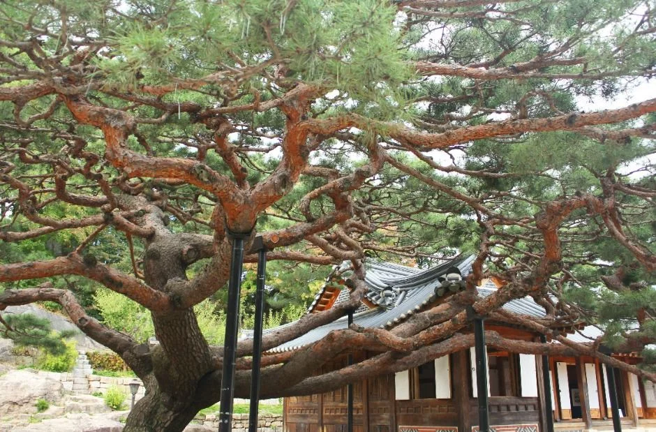
▲ 석파정의 소나무와 한옥 지붕. 사진 속 나무가 천세송인지는 확인하지 못했다. 사진=한국관광공사
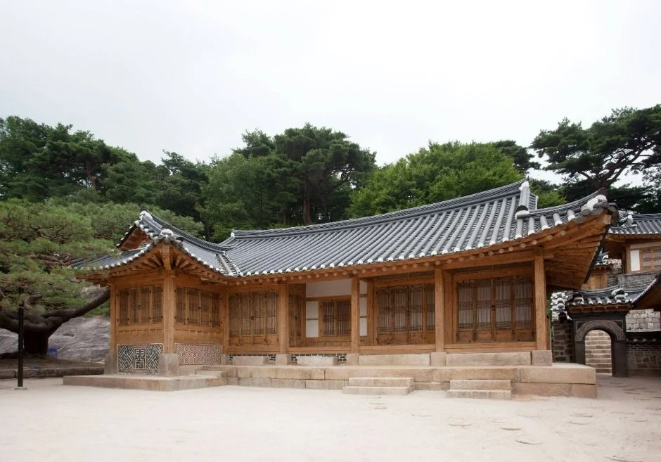
▲ 석파정 경내의 한옥 건물. 건물 이름은 한국관광공사 사진 설명에 나오지 않는다. 사진=한국관광공사
5. 가을 단풍과 관람 동선 — 시기는 못 박지 못했다
유수성중관풍루라는 이름이 "흐르는 물소리 속에서 단풍을 구경하는 누각"을 뜻한다는 점에서 가을 단풍이 석파정의 대표 볼거리라는 점은 서울시 소개글에서도 확인된다. 다만 올해 석파정의 단풍 시작·절정 날짜는 공식 자료에서 찾지 못했다. 산림청 예측에서 서울 도심 산지의 날짜는 확인하지 못했다. 산림청·국립수목원·국립산림과학원 예측을 전한 SBS Biz 보도(2026년 9월 22일)는 단풍이 10월 초 강원 북부 산지에서 시작해 10월 하순 전국적으로 절정(단풍 50%)에 이르고, 최근 5년 평균보다 절정이 약 0.8일 늦다고 전했다. 서울이나 인왕산·북한산의 개별 날짜는 이 보도에 없었다. 수종별로는 단풍나무류 10월 31일, 은행나무 10월 30일 절정으로 전해졌지만 지역 기준은 보도에 명시되지 않아 서울에 그대로 적용하기는 어렵다. 서울시 미디어허브의 2023년 11월 8일자 부암동 만추 소개는 석파정을 늦가을 명소로 꼽았다. 올해 실제 물드는 정도는 방문 직전 산림청 단풍 정보와 미술관 문의로 확인해야 한다. 산림청 바로가기
▲ 정자 일대의 단풍. 한국관광공사 사진이며 촬영 연도는 확인되지 않아 올해 상황과 같다고 볼 수 없다. 사진=한국관광공사
동선은 공식 자료만으로는 정리하기 어렵다. 한국관광공사 무장애 정보 사진에는 석파정 내부 통로가 "완만한 정도", 내부에 경사 구간이 있고, 미술관 옥상 출입구에 계단과 경사로가 있다고 올라와 있다. 정원은 암반과 숲 사이로 길이 이어지는 구조다. 서울시 미디어허브의 2022년 소개글에 따르면 미술관에서 전시를 보고 4층으로 올라가면 석파정으로 나가는 문이 있다. 우산·배낭은 입구 보관소에 맡겨야 하고 음식물 반입이 안 되므로 가볍게 가는 편이 좋다.
| 볼거리 | 근거 | 사진 |
|---|---|---|
| 유수성중관풍루(정자) | TourAPI 건물 소개, 서울시 미디어허브 | 위 정자 사진 |
| 천세송(보호수 제60호) | 서울시 미디어허브 | 소나무 사진은 천세송 여부 미확인 |
| 넓은 바위(너럭바위)와 거북바위 | 서울시 미디어허브(거북바위·넓은 바위 소개) | 아래 바위 사진 |
| 석탑 | 석파정 경내 사진에 등장, 유래는 서술하지 않음 | 아래 석탑 사진 |
| 부암동 일대 전경 | TourAPI 서울미술관 항목("석파정 앞마당에서 바라보는 전경") | 7번 섹션 사진 |
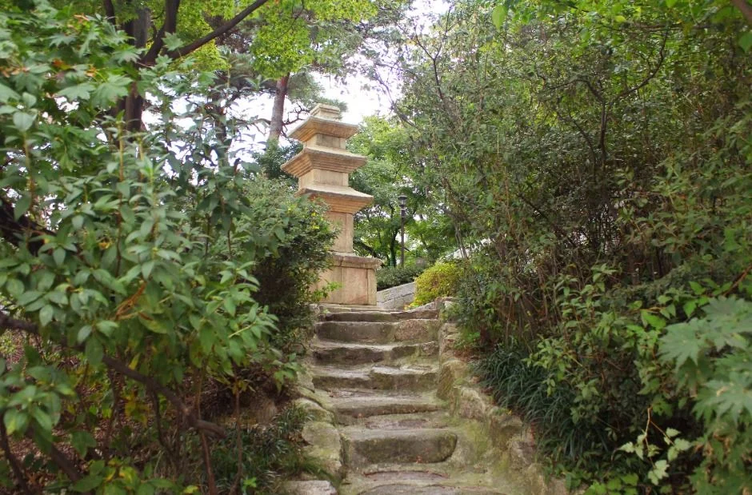
▲ 돌계단 위로 석탑이 보이는 경내. 석탑의 유래는 공식 자료로 대조하지 못해 서술하지 않는다. 사진=한국관광공사
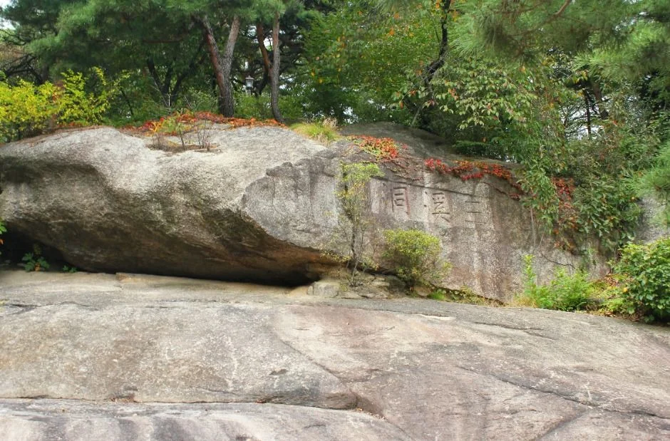
▲ 석파정의 큰 바위. 어느 바위(너럭바위 등)인지는 사진 설명에 나오지 않는다. 사진=한국관광공사
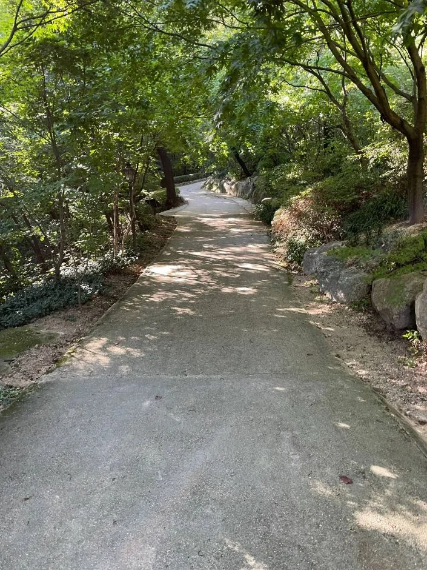
▲ 석파정 내부 경사길. 한국관광공사 무장애 정보 사진이다. 사진=한국관광공사
6. 지금 열리는 전시 3편 — 공식 전시 목록 기준
서울미술관 공식 EXHIBITION 목록(2026년 10월 7일 확인)에 현재 진행 중으로 보이는 전시는 세 편이다. 전시 내용 설명은 목록에 없어 제목과 기간만 옮긴다. 석파정 입장권은 미술관 입장권과 같으므로 전시 관람이 곧 정원 입장이고, 전시 하나만 골라 보든 세 편을 다 보든 요금은 같다. 서울미술관 전시 목록 바로가기
| 전시명 | 기간 표기 | 비고 |
|---|---|---|
| 내면의 세계를 그리고 싶다 | ~2027.2.14 | 설명은 목록에 없음 |
| 대체로 그렇다, 그렇지 않다 | ~2027.2.14 | 설명은 목록에 없음 |
| 한데살이 : 모여서, 무엇이 되다 | ~2026.12.27 | 설명은 목록에 없음 |
같은 목록의 이전 전시(쉽게 닳지 않는 사람 4월 1일~8월 17일, Extraordinary 시간이 쌓이는 순간 ~8월 17일 등)는 종료된 것으로 보인다. 목록에는 연도 없이 "~8월 17일"처럼 적힌 항목도 있어, 이 글은 연도가 명시된 위 3편만 진행 중으로 봤다. 해설 프로그램(전시 해설·정규 해설·단체 해설)은 메뉴에만 있고 시간표를 확인하지 못했다. 서울시 미디어허브 옛 소개글의 "도슨트 하루 3회" 같은 표현은 연도가 불분명해 따르지 않았다.
7. 인근 코스 — 부암동·창의문·백사실계곡
석파정이 있는 부암동은 백사실계곡, 인왕산 초소책방, 창의문 일대가 가까운 동네다. 백사실계곡의 유래·주차·대중교통은 앞서 쓴 "차 대기가 더 어렵다"… 부암동 백사실계곡부터 성북동 길상사까지, 서울 도심 속 조용한 가을 산책에 자세히 있으므로 여기서는 반복하지 않는다. 한국관광공사 TourAPI에 등록된 주소 기준으로 석파정은 창의문로11길 4-1, 창의문(자하문)은 창의문로 118, 백사실계곡은 부암동 115로, 모두 같은 동네이지만 도보 거리와 소요 시간은 확인하지 못했다.
| 장소 | 주소 | 비고 |
|---|---|---|
| 석파정 서울미술관 | 종로구 창의문로11길 4-1 | 이 기사의 주인공 |
| 창의문(자하문) | 종로구 창의문로 118 | TourAPI 관광지 등록 |
| 백사실계곡 | 종로구 부암동 115 | 유래·주차는 기존 기사 참고 |
| 윤동주문학관 | 종로구 창의문로 119 | TourAPI 문화시설 등록, 운영 시간은 확인하지 못했다 |
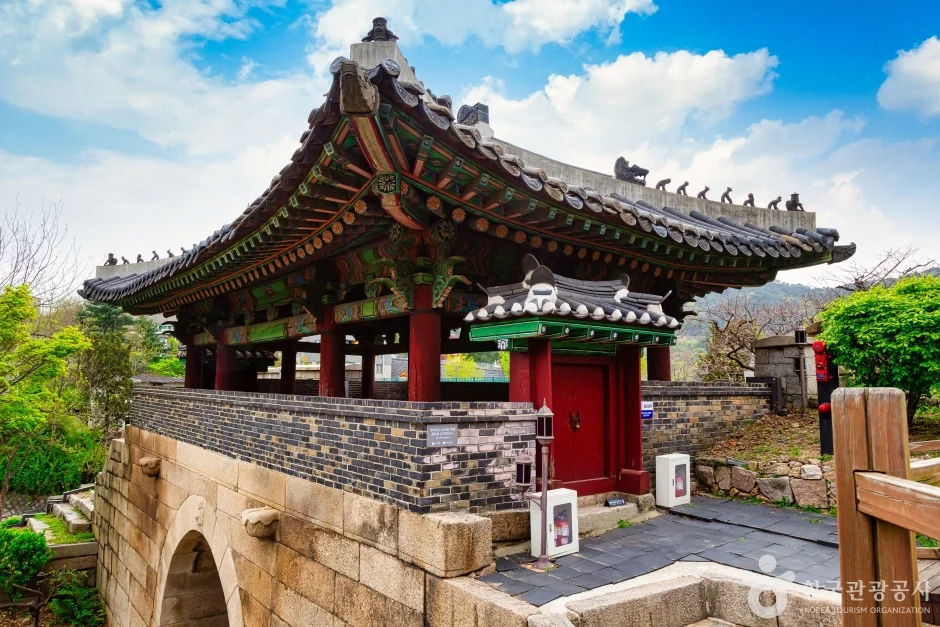
▲ 창의문(자하문) 문루. 석파정에서 가까운 부암동 코스에 속한다. 사진=한국관광공사
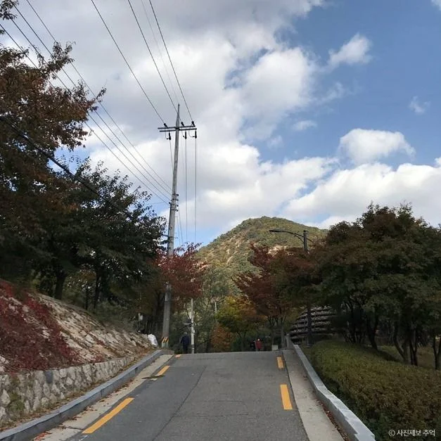
▲ 단풍이 든 부암동 길. 한국관광공사 부암동 항목 사진이며 촬영 연도는 확인되지 않았다. 사진=한국관광공사(사진제보 추억)
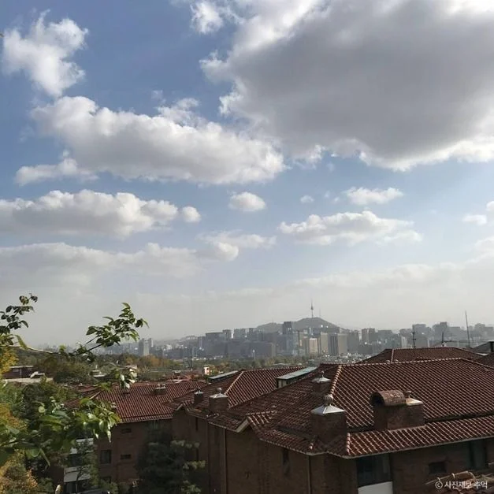
▲ 부암동 지붕 너머로 보이는 도심 전경. 석파정 앞마당 전망과 같은 장소는 아니다. 사진=한국관광공사(사진제보 추억)
✅ 출발 전 체크리스트
· 수~일 10:00~18:00(입장 마감 17:00), 월·화 휴관, 석파정 개별 입장 불가, 통합 입장권 성인 20,000원
· 예약 필수 여부는 공식 안내에서 확인하지 못했으니 02-395-0100으로 문의
· 자차는 전시 관람자만 무료(평일 2시간, 주말·공휴일 1시간 30분), 이후 10분당 1,000원, 18:10 이후 출차 불가
· 공식 안내가 주차장이 매우 협소하다고 밝혀 대중교통(경복궁역 3번 출구, 자하문터널입구 하차) 권장
· 비·눈이 오면 석파정 야외 관람이 제한될 수 있음, 음식물·반려동물 반입 불가
· 석파정 입장 마감은 공식 안내상 17:00이지만 첫 화면에는 석파정 10:00-17:00, 외부 안내 한 곳에는 16:00으로 달라 늦어도 16:00 전후 입장 권장
· 입장 마감 17:00, 주차장은 18:10 이후 출차 불가라 마감 직전 입장하면 무료 시간이 남아도 70분 안에 나와야 한다
· 올해 단풍 시기는 서울 단위로 확인하지 못했다. 전국 절정은 10월 하순 예측(산림청), 수종별로는 단풍나무류 10월 31일·은행나무 10월 30일
8. 정리
석파정은 서울미술관 통합 입장권(성인 20,000원)으로만 들어갈 수 있고, 수~일 10:00~18:00(입장 마감 17:00), 월·화 휴관이다. 자차는 전시를 관람해야 무료주차가 적용되며 평일 2시간·주말 1시간 30분을 넘기면 10분당 1,000원이 붙는다. 공식 안내가 주차장이 매우 협소하다고 밝혀 대중교통이 현실적이다.
석파정은 서울시 유형문화재 제26호(1974년)이며 흥선대원군이 인수한 별서로 소개된다. 올해 단풍 절정 날짜, 예약 방식, 정원 소요 시간, 해설 프로그램 시간은 확인하지 못했으니 방문 직전 미술관에 확인하자. 부암동 일대 주차·산책은 기존 백사실계곡 기사를 함께 보면 된다.